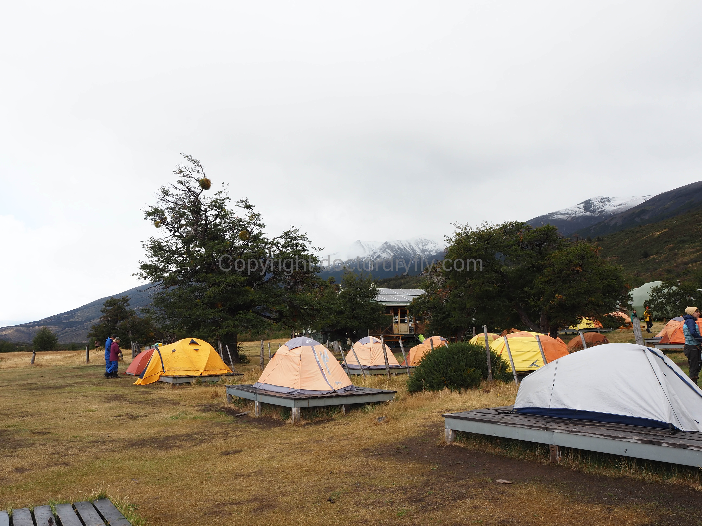
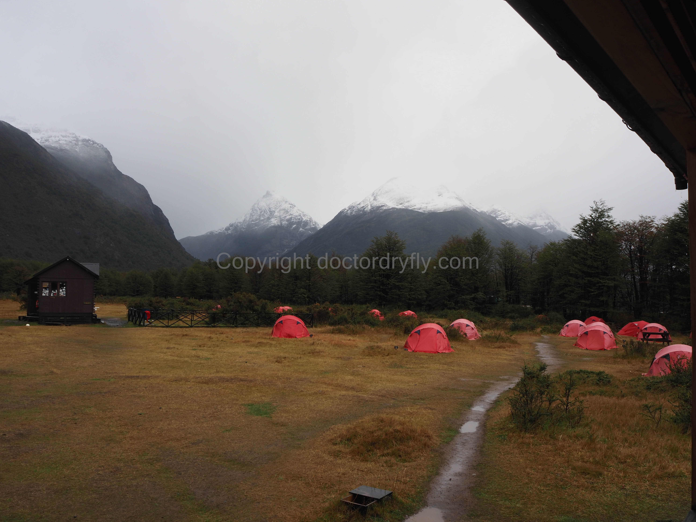
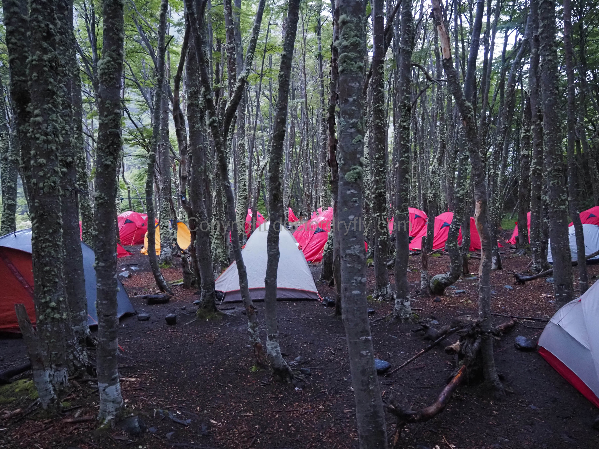
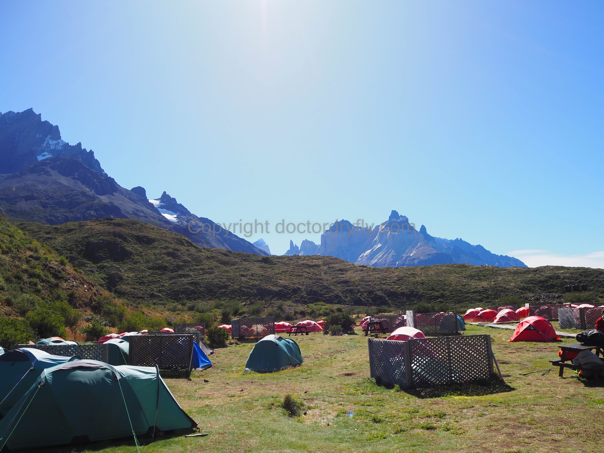
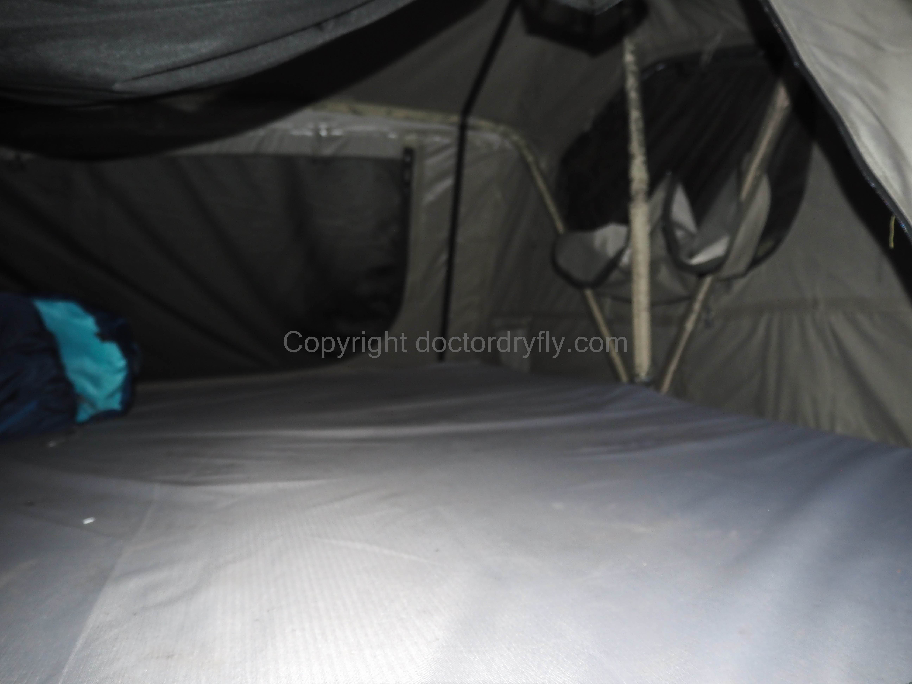

The Refugio System
Oh boy, where to even start? I take no joy in reporting that the refugio system on the O is beyond screwed up, though I’m baffled by some of the other comments I’ve seen online. A search of Reddit threads shows people saying that they believe the refugios have lots of supplies, the people are friendly, the services useful, and the food excellent. I have no idea in what year or which universe these people visited the refugios, because my experience was uniformly terrible in myriad ways, both large and small.
The most pressing problem is that the refugios are much, much too small. I have read, and had people tell me on the hike, that the refugios on the back side are now handling 70 people a day. Unfortunately, the refugios are constructed to handle maybe 20 people a day. To give some sense of the problem, at both Seron and Los Perros, there are exactly four bathroom stalls, total. There are approximately 40 to 50 men staying at Seron and Los Perros for anywhere between 8 and 16 hours, and there are exactly two or three toilets to use (two at Seron, three at Los Perros for men). At both places, the days we were there, the toilets became clogged and stopped working. Without getting too graphic, the morning we left Los Perros, people were going to the bathroom in a near-overflowing toilet that wouldn’t flush. There was virtually no soap at any of the refugio bathrooms, and toilet paper was hit-and-miss. The bathrooms, especially at Seron and Los Perros, make the Oktoberfest tent bathrooms look like Donald Trump’s golden toilet.
There were two showers at Seron, something like three at Los Perros, and only a few more at Grey. The front-side refugios are bigger, because they also handle hikers from the W, but are still not big enough. It wasn’t just the shower and bathroom facilities. All hikers must cook in a designated room or tent, and these are much too small at all refugios, except for maybe Frances, which splits traffic with Cuernos and has multiple small cooking rooms. There are lines for everything: check-in, toilets, sinks, cooking space, seating, dish washing, etc. The food was absolute garbage, and the food and accommodations were obscenely overpriced, though buying food and beer from the minimarkets wasn’t that bad.
Look, I recognize this is a hike and I don’t expect five star accommodations. I’m most familiar with wilderness camping using nothing but my own supplies, but the O forces everyone into these small spaces. I’m sure the refugios are hard to resupply, and they are handling too many people in an effort to meet public demand. But still, it would be nice if it wasn’t blindingly obvious that every single person associated with the system has stopped caring. Why bother? Permits for every single day are sold out and there is no shortage of people wanting to do the O hike. It’s really a shame.
I organize this section by refugios this will be how most people encounter the refugios on the hike and certain themes will emerge. I count Centro as a refugio, and note that we skipped Dickson and Chileno, and chose Frances rather than Cuernos because Cuernos was sold out.
Preliminaries
Everyone must stay at a refugio. There are a few basic options as to your accommodations, with some variation by refugio. Hikers can stay inside a dorm style building with a bed, outside in a refugio owned tent, outside in a fancier, larger canvas tent, or outside using their own gear. The fancier canvas tents are available at Chileno and Frances for sure, but not any other refugios as far as I’m aware.
At each refugio, there is a designated area to setup your own tent if that’s what you’re doing, as we did. The refugio owned tents have slightly better locations on the grounds in terms of wind-shelter many of them are located on wooden platforms, and they are slightly larger dome-style tents as compared to a typical backpacking tent. For those using their own gear, wooden platforms are mostly not available, though at some refugios (e.g., Seron), you might get lucky.
All refugios have a small market with some basic things like alcohol, candy bars, snacks, etc. though again, the quantity of items varies quite dramatically by refugio. Paine Grande had a full bar (good luck getting a seat or service), but that was the exception. Some of the refugios also had hot food that could be ordered during the day, mostly pizza and burgers. This food is separate from the pre-paid meals that many hikers buy, which are served on a schedule and I would not depend on this food to get through the hike. Because the dining area cannot accommodate everyone at once, the meal service for pre-ordered food is staggered. Again, this is the basic structure, but there is variation among refugios.
For check-in, passports and the PDI card are required. The PDI card is the print-out given to you when you enter the country of Chile. It apparently entitles you to tax-free charges on the stay, though it wasn’t clear to us what we actually got from it since we booked and paid for our refugios in advance. Still, at check-in, every refugio asked to see it. These requirements are annoying because it means one has to backpack with both their passport and that piece of paper.
Reservation System
I have nothing much interesting to say about the online reservation system. Hikers completing the O must book sites separately at Vertice and Fantastico Sur, the two companies which run the refugios. Good luck lining up dates between the two. This process was incredibly difficult and complicated, and I heard other hikers complain about it as well. There are various websites and Reddit threads that tell you how to book the refugios, but the system to do so is awful, and the page where you pay looks like you’re about to download a virus.
For our trip, we were able to reserve all of our sites using our own gear, except for our last day. Both Cuernos and Frances were sold-out, but Frances had the fancier canvas tents available (for $200). We booked that because we had no choice if we wanted to do the hike on our allotted timeline. Despite our purchase email from Fantastico Sur (which uses the website LasTorres.com and at last check wasn’t working) saying we would receive a separate confirmation email, we never did despite repeated attempts to email Las Torres (in Spanish). It didn’t matter as check-in basically consisted of showing your ID, and the worker checking their list to match your name.
Vertice owns the refugios of Dickson, Los Perros and Grey. Their reservation system requires that you book stays at each of those for three consecutive nights, even though it is not a park requirement that you stop at all three. As detailed in the hike summary, it appears to be perfectly acceptable to skip Dickson and go directly to Los Perros from Seron, but Vertice requires you to have a reservation at Dickson. We did just that, and lost our $10. It’s not a lot of money, but demonstrates the general approach Vertice and Fantastico Sur take, which is basically to extract as much profit out of the system as possible.
When booking the refugio stays, there is also an option to purchase breakfast, lunch, and dinner. We faced a decision about how much food we wanted to buy as we were mostly carrying our own gear and our own stove to cook our backpacking food. Still, seven days of food for two people is a lot to carry and would have made our packs very heavy. We decided to carry most of our own food but supplement it with a few meals purchased here and there, simply to reduce our pack weight. The food was almost uniformly awful, with Seron a bit of an exception. If you are a vegetarian, you simply tell them that when you check-in and they will prepare vegetarian meals, including lunches.
The Refugios
Centro
Centro is not a refugio proper, but a campground with showers, a bathroom, and a camping space. It’s close to the Welcome Center and the hotel, and provides access to the Base Las Torres hike. It’s also the biggest camping area. We were able to check-in when we arrived at about 9am. The workers simply gave us a sticker, told us to find an empty spot, put up our tent and attach the sticker. The bathroom area was okay (no soap though), the showers were hot in the afternoon, and we were done early enough in the day there was not a line for the showers. The cooking tent is large-ish, though not large enough, and is also where most people drop their packs for the day hike up to Las Torres. Looking back, Centro was neither particularly nice nor objectionable. The bathrooms could have been nicer and cleaner, but the camping area is fine, and hikers are able to spread out a little bit.
Seron
Seron is a Fantastico Sur refugio and seemed to be the second smallest (after Los Perros), but also had the most helpful employees. The camping area is a big field near the buildings, and there was plenty of space to camp away from people if one wanted. However, the wind was howling when we were there, so most people pitched their tent close to the hillside on the northeast or southeast side of the field in order to get some shelter. There were two bathroom stalls and showers separated by gender, though that broke down pretty quickly as lines formed for each. The water was hot and the shower was fine. By the morning, one of the toilets stopped flushing.
 The camping area at Seron for the refugio owned tents on platforms. Lots of space, but not a lot of protection from the wind.
We thought we’d purchased dinner, breakfast, and lunch for Frances, but when we arrived at Seron, the employees told us that we actually had meals there. There are two dinner seatings because the inside dining area at Seron is small. I’m not sure if you could order other food here, but there are coolers with sodas and alcohol, along with some snacks. Our dinner was split pea soup, salmon on rice pilaf, and a shared salad with bread. It was not bad and at the time I thought, okay, the food in these refugios might actually be decent. Breakfast was scrambled eggs, yogurt, and the like, lunch was a salmon, mayo, and onion mix sandwich that was better than it sounds. It also came with some trail mix. The vegetarian version was sauteed, marinated vegetables with fresh tomatoes that the vegetarian in our group thought was good.
Dickson
We did not spend the night at Dickson so I can’t provide much feedback on it. The buildings looked nice enough, the cooking and eating area was not heated when we were there, despite being attached to the main building, and the bathroom was small. It was very annoying that when we walked up in the pouring rain we stood around for a minute or two trying to figure out which building to head to for a warmup while a group of employees sat on the porch and watched us without bothering to give us any directions.
 Dickson camping area.
Los Perros
The smallest and almost certainly the worst refugio, though our experience at Paine Grande was a close second. The campground itself is in a stand of trees that provided decent shelter from the wind but didn’t offer much space. The cooking and eating area was tiny, and there were queues to do both for most of the night. The cooking tent also become very hot with all the stoves and bodies moving around in there. The bathrooms were tiny and gross, and there was no hot water. People had clearly used the shower to wash off their shoes and mud was splattered everywhere. It had rained a lot so much of the area surrounding the buildings was extremely muddy, which made it difficult to walk around in camp shoes. By the morning, the toilets in both the men’s and women’s bathrooms were clogged and didn’t flush. The whole place was very dirty and didn’t feel taken care of at all.
 The camping area at Los Perros, which wasn tight on space but had decent shelter from the wind.
Grey
Grey is certainly nicer and bigger than both Seron and Los Perros, though the attitude of the employees left something to be desired. The shower and bathroom areas were also larger and cleaner, with hot water and soap. Grey’s cooking and eating area was only three tables, but it felt bigger than either Los Perros or Seron. We ate breakfast at Grey, which consisted of a small buffet with really bad coffee, okay eggs, stale bread (which ran out halfway through service), yogurts, cereals, and juice. We also ordered lunch, and it was terrible. I couldn’t actually tell what the meat-based sandwich was made of, as it looked and tasted like dog food, while the vegetarian option was smashed lime beans on bread that was basically tasteless. They did give us Toblerones in the lunches.
The camping area seemed a bit more spread out and was in pine trees, which provided some protection from the wind and didn’t feel too crowded. Grey might have the nicest camping area in terms of space and privacy.
Paine Grande
The refugio feels much bigger than anything hikers encounter up to that point, but it also feels extremely crowded. The ferry to Pudeto stops at Paine Grande and it is the one refugio that all the W and O hikers share, as well as other hikers who use it as a base to see Grey Glacier. There is a bar upstairs in the refugio, though it was extremely crowded after about 4pm. The bathrooms are relatively far from the camping area, but are basically fine. The problem was that the employees closed them for cleaning at about 8pm, when everyone is getting ready for bed, and they were closed again at about 7am, when everyone was waking up. They couldn’t clean them during off hours? It was nice that both the bathrooms and showers were at least cleaned somewhat regularly, and there were no giant queues to use them. The cooking room at Paine Grande was the biggest and nicest, had the most plugs and outlets of any refugio, and while it seemed a little dirty in the cooking area, the seating area was fine. I heard from some other hikers that the employees kicked them out of the cooking area at exactly 10pm, despite them being in the middle of making their dinner.
We paid for our dinner at Paine, which consisted of a buffet of chicken and beef, along with mashed potatoes, beans, hummus, bread, and some little desserts. The chicken and at least one of the desserts were edible. Breakfast was similarly terrible, with runny eggs, and the standard yogurts, cereals, etc. Lunch was again terrible sandwiches, with the vegetarian option consisting almost entirely of smashed black beans smeared between two pieces of white bread. I can’t remember what the non-vegetarian option was because I threw it out. It baffled me that they gave hikers some energy powder for their water. Who wants to mix that into their bladder or water bottles while on a hike? There was some trail mix, dried fruit, and other stuff, but I basically threw this entire lunch in the trash.
The camping area at Paine Grande is the worst among the refugios. The refugio itself is located at the bottom of a canyon, and the wind blows straight down the canyon all day long, and for us, into the night. There are a few barricades setup to offer some protection to tents, but a lot of the ground behind the barricades was extremely uneven and dusty. We thought we got lucky by being able to setup behind a barricade, but quickly realized that the lack of grass meant dust constantly blew into our tent.
 The camping area at Paine Grande. Good views, but this area completely filled up with tents in the evening, and it was very windy.
It was very crowded, with tents packed into the camping area. On our stay, it began raining around 9 or 10pm, the wind picked up, and nearly every hiker was inside their tent. Because we were all basically on top of each other, talking in one tent meant everyone else could hear their conservation. The crowds also meant that people were walking to and from the distant bathroom all night, and it was just a loud chaotic scene in general.
The employees at Paine were those who most obviously did not give a crap about anything. We went into the minimarket and the woman working the cash register eventually looked up and rang us up after finishing her texts. When we went to check-in, two women didn’t acknowledge us at all, and the woman copped an attitude when some other hikers asked her to explain something in English. The employees blasted EDM at both dinner and breakfast into the dining room. At around 10 or 11pm, between the wind and rain, I could hear loud music and yelling, like teenagers having a party. It was the employees in their own large tent drinking and screaming! Imagine 100 people or so crammed into backpacking tents within about four feet of each other on all sides, preparing for a 13 mile hike in the rain the next day, at midnight, listening to 10 or 15 refugio employees hosting their own personal dance club. It wasn’t cute or funny, just unbelievably unprofessional and annoying. The only saving grace is that sometimes we couldn’t hear them over the wind and rain. And, we weren’t even that close to the party! I cannot believe a hiker didn’t go over to them and tell them off (or maybe they did, and the employees didn’t care). I’m not trying to be a scold as I worked in the service industry for years and I think my tolerance for bad behavior is pretty high; this was completely ridiculous. For what it’s worth, most of the employees in the morning looked hungover.
Frances
Frances is situated in some trees on a hill, and while nice looking, it’s a bit of a haul up and down to the bathrooms and minimart. The buildings look the newest, and the bathrooms and showers seem to be in the best shape. My biggest gripe with Frances, besides the walk up and down to the store and bathrooms, is that there are smaller, separated cooking and eating areas, but they are much too small and don’t provide much protection from the elements. For us in the rain, we were basically cooking and sitting outside, which was cold (though dry). Still, the camping area is a little more spread out and Frances just seemed newer and nicer than the other refugios.
 This is a bad picture, but it’s the inside of our $200 canvas tent. The tent is off the ground and completely encased in heavy canvas with a soft mat on the bottom.
Conclusion
The refugio situation should not stop anyone from doing the hike, but everyone should know that the situation is bad. They are small, crowded, dirty, the food is bad, and the employee attitudes ranged from mild indifference to outright hostility. The online booking and reservation system is its own problem. I don’t have much hope for improvement given the overwhelming popularity of the hike, but I think it’s important that hikers realize what they are getting into. Maybe more public complaints to the park or government will force some improvement.